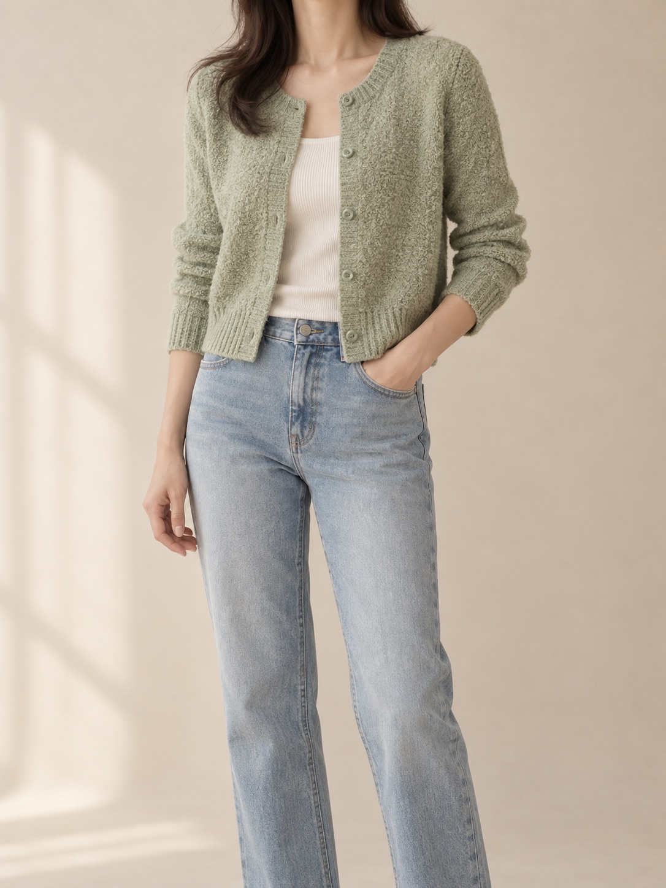
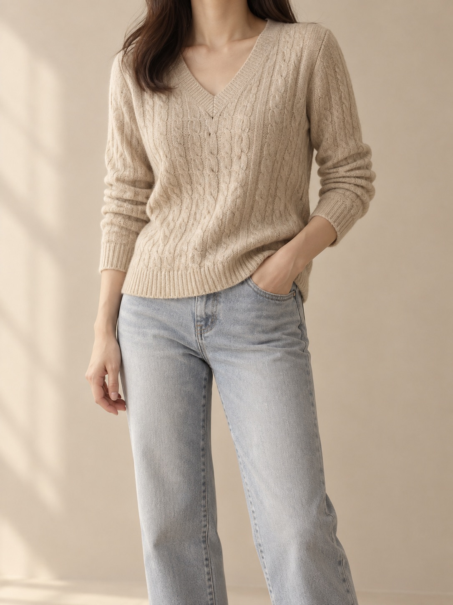
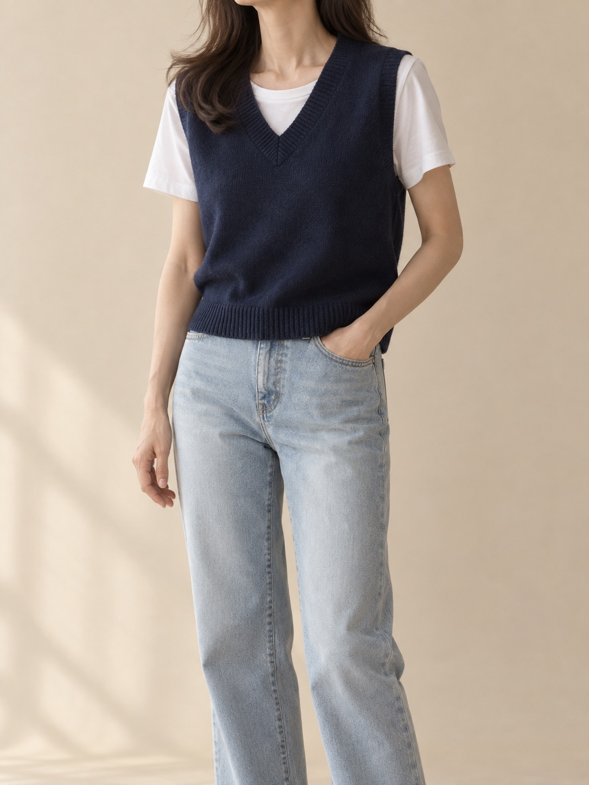
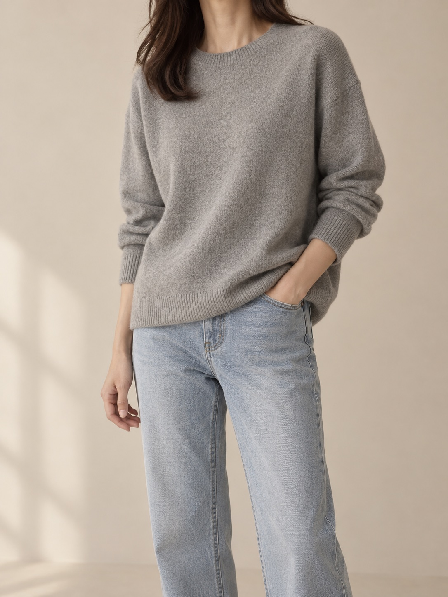

걸스라미는 여성 니트를 직접 기획하고 국내에서 생산합니다. 판매 중인 상품의 소재, 실측, 색상과 관리 정보를 상품별로 안내합니다.




원사와 조직을 정하고 편직·마감·검품 과정을 관리합니다. 상품 페이지에는 확인된 소재, 실측과 관리 방법을 함께 표시합니다.
상품의 계절과 조직에 맞는 원사를 정합니다.
선택한 원사와 조직으로 니트의 각 부분을 짭니다.
편직한 부분을 연결하고 목선, 소매와 밑단을 마감합니다.
소재, 색상, 형태와 상품 실측을 확인해 상세 정보에 반영합니다.
현재 옵션, 가격, 재고와 배송 조건은 스마트스토어 상품 페이지에서 안내합니다.
고객이 구매 전에 확인할 수 있는 구체적인 정보를 중심으로 정리합니다.
"베이지(RM277)" 같은 도매 품번을 옵션명에서 지우고, 색상은 정식 이름으로 부릅니다.
총장, 가슴 단면 등 확인된 치수를 상품 상세에 표시합니다.
실제 상품 사진과 실측을 확인해 표시합니다. 교환 조건은 스마트스토어 상품 안내에서 확인해 주세요.
상품별 출고 예정일과 배송 조건은 스마트스토어에서 확인할 수 있도록 안내합니다.
상품별 구매 후기와 판매자 답글은 스마트스토어에서 확인할 수 있습니다.
상품마다 소재 혼용률, 핏, 총장과 판매 색상을 구분해 표시합니다.
새 상품과 판매 소식은 스마트스토어에서 확인해 주세요.